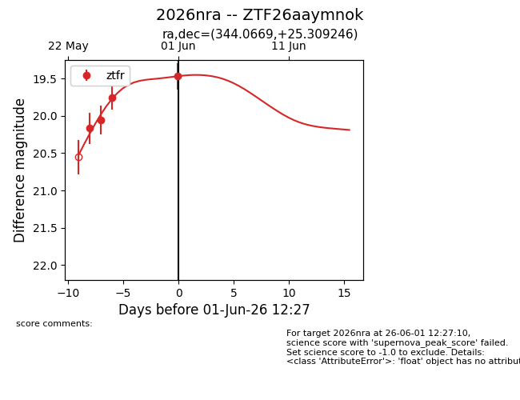
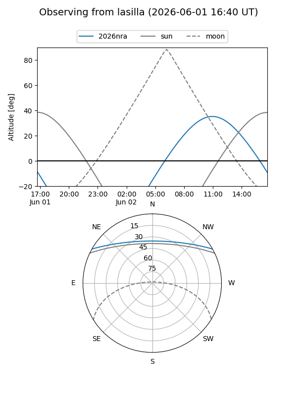
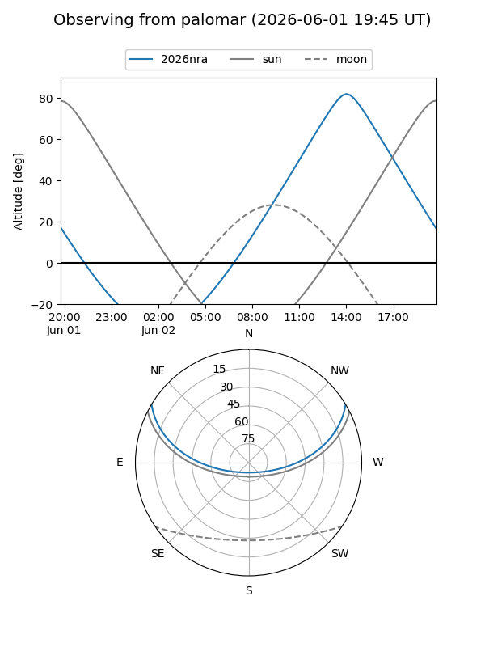
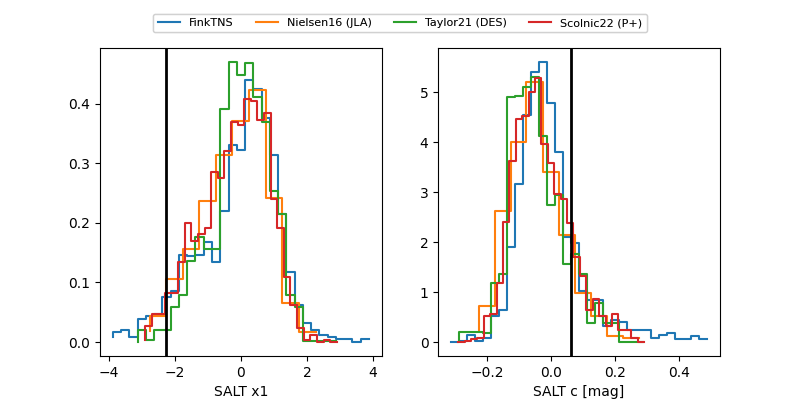

2026nra
Target 2026nra at 2026-06-01 12:28
Aliases and brokers:
lsst-FINK: link
lsst-Lasair: link
lsst-ALeRCE: link
ztf-FINK: link
ztf-Lasair: link
ztf-ALeRCE: link
TNS: link
YSE: link
alt names
ZTF26aaymnok (ztf,fink_ztf)
2026nra (tns,yse)
Coordinates:
equatorial (ra, dec) = 344.0669,+25.30925
equatorial (HMS+DMS) = 22:56:16.05,+25:18:33.29
galactic (l, b) = (92.5180,-30.67433)
Flags:
TNS confirmed: nan
Photometry:
last ztfr=19.47
4 ztfr detections
Lightcurve

Visibility


Additional plots
